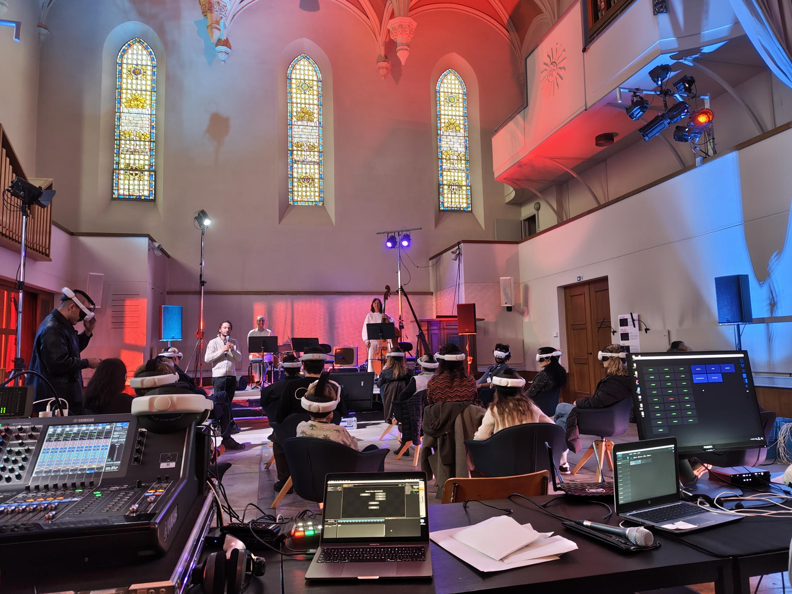

Module 05 / Sound Technology & AI
扱うこと
- 音楽プログラミング、Python、DAW拡張の基本設計
- センサー、MIDI、OSC、生成システムの整理
- Suno、ChatGPT、Codex、LLM、Deep Learning、追加学習の考え方
- 映像・インタラクションと作品コンセプトの接続
Sound Technology と AI を分けずに扱うレッスン内容
テクノロジーは、導入するだけでは作品になりません。 どの道具を選ぶか、どの結果を採用するか、音楽的にどう構成するかを、 制作プロセスの中で具体的に整理します。
はじめて触れる段階から、制作の中で自分なりに使い始める段階までを想定しています。 既存の作品やスケッチがある場合は、それをもとに必要な技術だけを選びます。
OpenMusic Max/MSP Max for Live Suno Python Codex ChatGPT ElevenLabs LLMトレーニング Deep Learning TouchDesigner VRテクノロジー
制作環境
普段使っているDAWや音楽制作環境をもとに、音作り、編集、ルーティング、外部ツールとの接続を整理します。
音楽プログラミング
音高、リズム、形式、確率、ルール、反復、変化を使い、PythonやCodexも補助にしながら、作曲のための小さな仕組みを作ります。
AI音源の判断
生成された音源を聴き、使える部分、避けたい部分、編集すべき点、作品に接続できる可能性を整理します。
映像・インタラクション
音と映像、動き、センサー、画面上の反応を結びつけ、作品の構造として使える形にします。
扱える範囲Scope
それぞれの技術を深く網羅する講座ではなく、作品制作に必要な範囲を選んで扱います。 目的がまだ曖昧な場合は、まず小さな試作から始めます。
音の仕組みを作る
パッチ、ルール、確率、反復、変化を使って、音や構造が動く仕組みを作ります。
制作環境を広げる
DAWの中だけで完結しない制作、外部制御、拡張ツール、リアルタイム処理を整理します。
AIを素材として扱う
生成結果をそのまま使うのではなく、選定、編集、再構成、批評を通して作品に接続します。
言葉と音をつなげる
プロンプト、ChatGPTとの対話、文章生成、データの整理、LLMトレーニングやDeep Learningの考え方を、音楽制作の補助線として扱います。
音と映像を連動させる
映像生成、画面上の動き、リアルタイム反応を、音楽作品やパフォーマンスに接続します。
小さな試作を作る
大きなシステムを作る前に、短い実験、音のスケッチ、簡単な操作系から始めます。
レッスン形式Format
- オンライン個人レッスン
- 60分 / 単発または継続
- DAWセッション、音源、パッチ、生成素材、映像スケッチを共有可能
- OpenMusic、Max/MSP、Max for Live、TouchDesigner、VRテクノロジーなどの導入相談
- Suno、ElevenLabs、ChatGPT、Codex、LLMトレーニングなどの生成・整理・活用相談
- プロンプト、生成結果、対話型AIの使い方、PythonやDeep Learningを含む追加学習の計画相談にも対応
- 必要な技術を選び、小さな制作課題として進めます
無料相談 · 30分